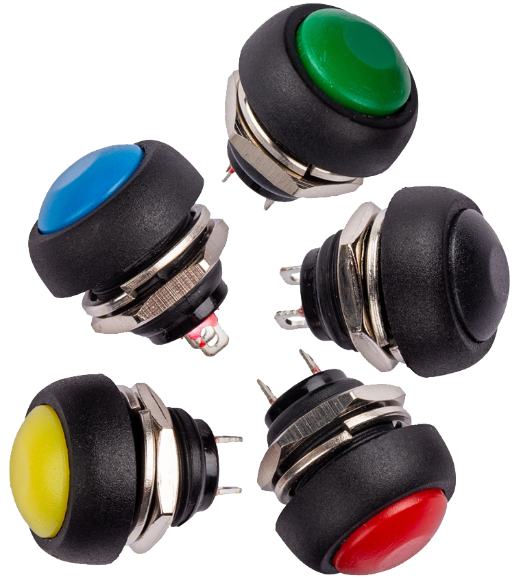

Capteurs et Actionneurs
Un système informatique embarqué reçoit des informations du monde réel par le moyen de capteurs. Il mémorise et traite ces informations par le microprocesseur, puis renvoie des informations vers le monde réel par l’intermédiaire des actionneurs.
Les capteurs
Un capteur est un dispositif qui transforme une grandeur physique en un signal électrique.
Il peut être logique (à deux position : oui/non, vrai/faux, présent/absent) ou analogique (renvoie un signal électrique proportionnelle à la grandeur physique observée).
Exemples :
- Le bouton poussoir est un capteur logique (appuyé/relâché). 
- Le capteur ultrason est un capteur analogique mesurant une distance.
Les actionneurs
Un actionneur est un dispositif capable de produire une action physique à partir de l’énergie qu’il reçoit.
Exemples :
- La LED, qui produit un signal lumineux.
- Le moteur permettant de mettre en mouvement un système